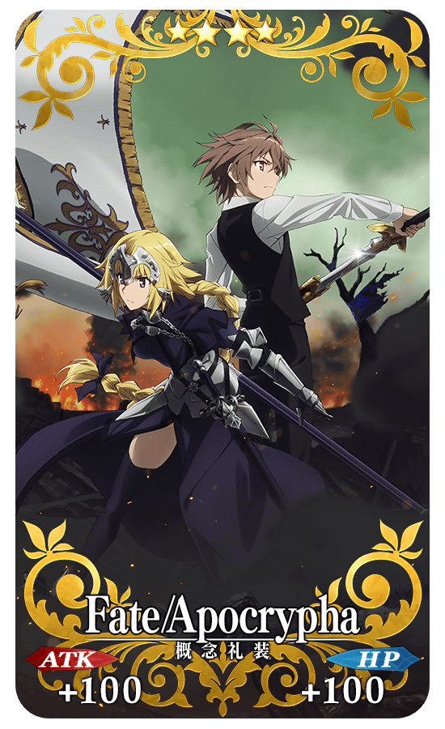
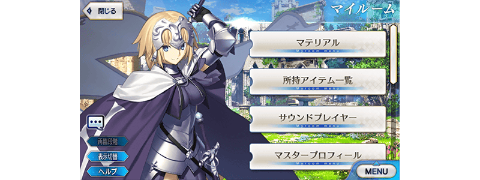
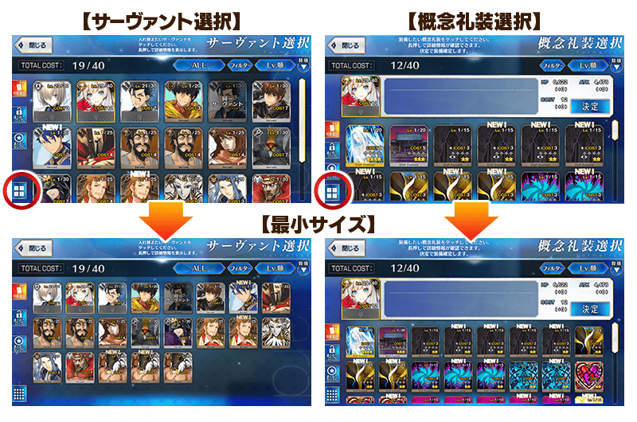

2018年4月25日(三) 17:00～5月9日(三) 11:59的期間，實施「Fate/Apocrypha × FGO 特別活動開幕前夕宣傳活動」!
◆舉辦期間◆
2018年4月25日(三) 17:00～5月9日(三) 11:59
在「Fate/Apocrypha」活躍的齊格飛、阿塔蘭塔(Archer)戰鬥動作及寶具演出翻新！
另外，在「Fate/Grand Order」官方網站內的公告中，公開了「★4(SR)齊格飛」及「★4(SR)阿塔蘭塔(Archer)」的寶具演出。敬請確認。
◆翻新時間◆
2018年4月25日(三) 17:00～
【齊格飛】
【阿塔蘭塔(Archer)】
【2018年4月30日(一) 23:00追記】
在「Fate/Apocrypha」活躍的莫德雷德(Saber)戰鬥動作及寶具演出翻新！
另外，在「Fate/Grand Order」官方網站內的公告中，公開了「★5(SSR)莫德雷德(Saber)」的寶具演出。敬請確認。
◆翻新時間◆
2018年4月30日(一) 23:00～

|
下述的期間中，在關卡開始時的支援選擇畫面，選擇其他Master的對象Servant做支援情況、其他Master選擇自己的對象Servant做支援情況的友情點數獲得量變成2倍。 ◆舉辦期間◆ |
 |
◆對象Servant◆
| 職階 | 稀有度 | Servant名 |
|---|---|---|
| Saber | ★★★★★ | 莫德雷德 |
| ★★★★ | 齊格飛 | |
| Archer | ★★★★ | 阿塔蘭塔 |
| ★★★★ | 凱隆 | |
| ★★★ | 大衛 | |
| Lancer | ★★★★★ | 迦爾納 |
| ★★ | 武藏坊弁慶 | |
| Rider | ★★★★★ | 阿基里斯 |
| ★★★★ | 阿斯托爾福 | |
| ★★ | 聖喬治 | |
| Caster | ★★★★ | 齊格 |
| ★★★ | 阿維斯布隆 | |
| ★★ | 威廉・莎士比亞 | |
| Assassin | ★★★★★ | 開膛手傑克 |
| ★★★★★ | 賽米拉米斯 | |
| Berserker | ★★★★★ | 弗拉德三世 |
| ★★★★★ | 坂田金時 | |
| ★★★★ | 阿塔蘭塔〔Alter〕 | |
| ★★★★ | 弗蘭肯斯坦 | |
| ★ | 斯巴達克斯 | |
| Ruler | ★★★★★ | 天草四郎 |
| ★★★★★ | 貞德 |
※4/29(日)18:15追記
※請注意NPC Servant即使是對象Servant也在友情點數獲得量2倍的對象外。
下述的期間中，在強化對象Servant時，大成功(經驗值2倍加成)・極大成功(經驗值3倍加成)的發生機率以期間限定變成2倍。
藉此機會強化對象Servant吧！
◆舉辦期間◆
2018年4月25日(三) 17:00～5月9日(三) 11:59
◆對象Servant◆
| 職階 | 稀有度 | Servant名 |
|---|---|---|
| Saber | ★★★★★ | 莫德雷德 |
| ★★★★ | 齊格飛 | |
| Archer | ★★★★ | 阿塔蘭塔 |
| ★★★★ | 凱隆 | |
| ★★★ | 大衛 | |
| Lancer | ★★★★★ | 迦爾納 |
| ★★ | 武藏坊弁慶 | |
| Rider | ★★★★★ | 阿基里斯 |
| ★★★★ | 阿斯托爾福 | |
| ★★ | 聖喬治 | |
| Caster | ★★★★ | 齊格 |
| ★★★ | 阿維斯布隆 | |
| ★★ | 威廉・莎士比亞 | |
| Assassin | ★★★★★ | 開膛手傑克 |
| ★★★★★ | 賽米拉米斯 | |
| Berserker | ★★★★★ | 弗拉德三世 |
| ★★★★★ | 坂田金時 | |
| ★★★★ | 阿塔蘭塔〔Alter〕 | |
| ★★★★ | 弗蘭肯斯坦 | |
| ★ | 斯巴達克斯 | |
| Ruler | ★★★★★ | 天草四郎 |
| ★★★★★ | 貞德 |
※4/29(日)18:15追記
下述的期間中，與「Fate/Apocrypha」關連的Servant對象，幕間物語及強化關卡的AP消耗量變成1/2。
※請注意曜日關卡為對象外。
※在戰鬥中撤退的情況AP的消耗也是1/2。
◆舉辦期間◆
2018年4月25日(三) 17:00～5月9日(三) 11:59
◆對象Servant(幕間物語)◆
| 職階 | 稀有度 | Servant名 |
|---|---|---|
| Saber | ★★★★★ | 莫德雷德 |
| ★★★★ | 齊格飛 | |
| Archer | ★★★★ | 阿塔蘭塔 |
| ★★★ | 大衛 | |
| Lancer | ★★★★★ | 迦爾納 |
| ★★ | 武藏坊弁慶 | |
| Rider | ★★★★ | 阿斯托爾福 |
| ★★ | 聖喬治 | |
| Caster | ★★ | 威廉・莎士比亞 |
| Assassin | ★★★★★ | 開膛手傑克 |
| Berserker | ★★★★★ | 弗拉德三世 |
| ★★★★★ | 坂田金時 | |
| ★★★★ | 弗蘭肯斯坦 | |
| ★ | 斯巴達克斯 | |
| Ruler | ★★★★★ | 天草四郎 |
| ★★★★★ | 貞德 |
◆對象Servant(強化關卡)◆
| 職階 | 稀有度 | Servant名 |
|---|---|---|
| Saber | ★★★★ | 齊格飛 |
| Archer | ★★★★ | 阿塔蘭塔 |
| Lancer | ★★★★★ | 迦爾納 |
| ★★ | 武藏坊弁慶 | |
| Rider | ★★★★ | 阿斯托爾福 |
| Caster | ★★ | 威廉・莎士比亞 |
| Berserker | ★ | 斯巴達克斯 |
| Ruler | ★★★★★ | 天草四郎 |
下述的期間中，在迦勒底之門內每日出現的關卡「種火集め」與「修練場」全種類開放。
◆舉辦期間◆
2018年4月25日(三) 17:00～5月2日(三) 22:59
◆對象關卡◆
【種火集め】
初級、中級、上級、超級
【修練場】
初級、中級、上級、超級
| 時間 | 種火集め | 修練場 |
|---|---|---|
| 4月25日(三) 17:00～ 5月2日(三) 22:59 |
･スペシャルイベント開幕直前 月曜 種火集め<槍･殺編> ･スペシャルイベント開幕直前 火曜 種火集め<剣･騎編> ･スペシャルイベント開幕直前 水曜 種火集め<弓･術編> ･スペシャルイベント開幕直前 木曜 種火集め<槍･殺編> ･スペシャルイベント開幕直前 金曜 種火集め<剣･騎編> ･スペシャルイベント開幕直前 土曜 種火集め<弓･術編> ･スペシャルイベント開幕直前 日曜 種火集め<ランダム編> |
･スペシャルイベント開幕直前 月曜 弓の修練場 ･スペシャルイベント開幕直前 火曜 槍の修練場 ･スペシャルイベント開幕直前 水曜 狂の修練場 ･スペシャルイベント開幕直前 木曜 騎の修練場 ･スペシャルイベント開幕直前 金曜 術の修練場 ･スペシャルイベント開幕直前 土曜 殺の修練場 ･スペシャルイベント開幕直前 日曜 剣の修練場 |
※關卡通過報酬的魔力稜鏡是只限初次通過時才可獲得。
※請注意以期間限定出現的「種火集め」及「修練場」跟平常每日出現的「種火集め」及「修練場」關卡有所差異，不會引繼「關卡情報」。
※舉辦期間中，關卡通過報酬不會重置。
【種火集め 關卡的難易度等】
| 難易度 | 推薦Lv | 消耗AP | 初次通過報酬 |
|---|---|---|---|
| 初級 | 5 | 10 | 魔力稜鏡 1個 |
| 中級 | 10 | 20 | 魔力稜鏡 2個 |
| 上級 | 25 | 30 | 魔力稜鏡 3個 |
| 超級 | 40 | 40 | 魔力稜鏡 4個 |
【修練場 關卡的難易度等】
| 難易度 | 推薦Lv | 消耗AP | 初次通過報酬 |
|---|---|---|---|
| 初級 | 10 | 10 | 魔力稜鏡 1個 |
| 中級 | 25 | 20 | 魔力稜鏡 2個 |
| 上級 | 40 | 30 | 魔力稜鏡 3個 |
| 超級 | 60 | 40 | 魔力稜鏡 4個 |
在達文西工房的「稀有稜鏡交換」追加下述的新道具。
通過Fate/Apocrypha獲得關卡及「Fate/Apocrypha動畫放送記念宣傳活動」概念禮裝獲得關卡的話，可獲得關卡限定的概念禮裝獲得。
※請注意Fate/Apocrypha獲得關卡及「Fate/Apocrypha動畫放送記念宣傳活動」概念禮裝獲得關卡並無冒險部份。
※請注意在2017年舉辦的宣傳活動獲得過限定概念禮裝的話，無法遊玩新的記念關卡。
◆追加時間◆
2018年4月25日(三) 17:00～
◆追加道具◆
・Fate/Apocrypha獲得關卡開放權
・「Fate/Apocrypha動畫放送記念宣傳活動」概念禮裝獲得關卡開放權
◆Fate/Apocrypha獲得關卡限定概念禮裝◆
|  |
★★★★SR |
◆「Fate/Apocrypha動畫放送記念宣傳活動」限定概念禮裝◆
|
★★★★SR |
| 追加道具 | 能交換 次數 |
必需的 稀有稜鏡數 |
|---|---|---|
| Fate/Apocrypha獲得關卡 | 1次 | 3個 |
| 「Fate/Apocrypha動畫放送記念宣傳活動」概念禮裝獲得關卡 | 1次 | 3個 |
※追加到「稀有稜鏡交換」的概念禮裝獲得關卡為常駐，並無交換期限。
※關於已持有交換對象概念禮裝的玩家，剩餘次數的顯示會是「0次」，無法交換。
※在通過關卡入手的限定概念禮裝會是最大等級。
為了記念「Fate/Apocrypha × FGO 特別活動開幕前夕宣傳活動」的舉辦，MyRoom以期間限定變更為特別樣式！
◆期間◆
2018年4月25日(三) 17:00～5月9日(三) 11:59

變更為可點擊在「強化」及「商店」畫面顯示的禮物箱圖示，領取禮物。

擴張可縮小持有Servant及概念禮裝的圖示尺寸縮小功能的對應畫面。
可縮小的圖示尺寸能變更為3階段。
擴張對應畫面如下。
【編成畫面】
・隊伍編成畫面(Servant選擇/概念禮裝選擇)
・支援編成畫面(Servant選擇/概念禮裝選擇)
・靈基一覧畫面(Servant/概念禮裝)
・靈基保管室畫面(Servant/概念禮裝)
【MyRoom】
・靈基一覧畫面(Servant/概念禮裝)

在「Fate/Apocrypha」活躍的一部份Servant登場「Fate/Apocrypha × FGO 特別活動開幕前夕Pick Up召喚(每日交替)」的詳情請至下述橫幅確認。